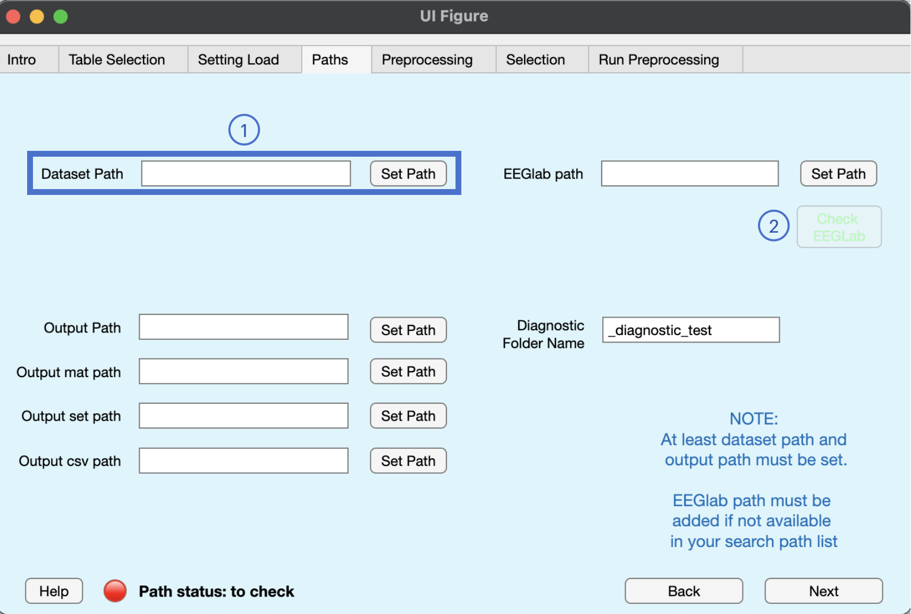

Path info
Path info is a struct variable that stores all the important paths necessary to run the preprocessing correctly. BIDSAlign requires at least the path to the dataset root folder to be set. The path to eeglab must also be given if not already added to the current search path (you can also simply run addpath( /path/to/eeglab/ )).
In particular, the following paths can be set (all parameters are char arrays):
- Datasets Path (required): the path to the root datasets' folder. BIDSAlign will use it as the starting point during the preprocessing file search. In particular, BIDSAlign will look for any subfolder with name equal to the dataset_code entry of the dataset info table. The following image will better explain what BIDSAlign assumes to be the datasets_path.

- Output Path (required): the root path used by BIDSAlign to save all the preprocessed files. By default, BIDSAlign will use the current working directory (the output of the
pwd command). Inside the output path, BIDSAlign will create a set of folders that will be used to store files of specific format. For example, the _mat_preprocessed folder will store all the .mat files. The following behavior will be bypassed if custom output paths (the next elements of the list) will be set.
- Output mat path (optional): a custom path to be used by BIDSALign to store the .mat files. It will be used in place of the
output_path/_mat_preprocessed/ folder.
- Output set path (optional): a custom path to be used by BIDSALign to store the .set files. It will be used in place of the
output_path/_set_preprocessed/ folder.
- Output csv path (optional): a custom path to be used by BIDSALign to store the marker files. It will be used in place of the
output_path/_csv_preprocessed/ folder.
- EEGlab path (optional): the path to the eeglab folder. It can be left empty if eeglab is already included in your search path. As an alternative.
- Diagnostic Folder Name (optional): the name of a folder with extra diagnostic tests to be included together with preprocessed EEGs in the .mat files. This is a particular option potentially useful for those who wants to include a specific test directly in the stored file to be used as a label in future AI projects.
Path info stores other information that are useful but can be automatically retrieved by BIDSAlign itself. Such information are the path to BIDSAlign functions and the current working directory.
GUI Tab

In this tab, you can set up most of the path_info's struct fields. In particular, looking at the figure above, the following actions can be performed with the numbered buttons:
- each path edit field + button can be used to change the corresponding field. In the edit field, you can directly write the full path to use (if not valid, it won't be used). With the button, you can set up the same path (folder) by using the interactive selector.
- the check EEGLab button can be used to check if eeglab is available in your current search path. If not, the button will display a red text and can be clicked, otherwise it will be disabled and the text will become green.